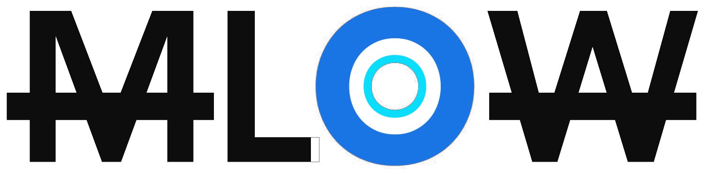
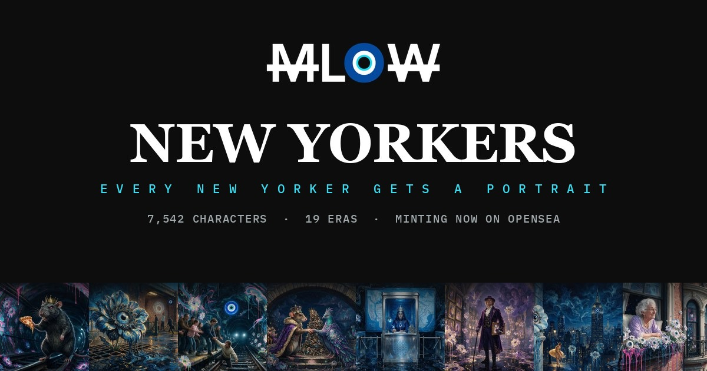

01 · The marks
The eye is the sovereign mark. The wordmark carries it as the O.


MLOW wordmark · black on light The blue evil eye · true color
The blue evil eye · true color
 The Blossom sigil · white
The Blossom sigil · white
 The Blossom sigil · black
The Blossom sigil · black


The share card · 1200 by 630Never rebuild the wordmark in type, never stretch, skew or recolor it, never put it on a gradient. Clear space is the height of the eye on every side. The eye never moves and never blinks in a still. The Blossom sigil is the community mark; it sits beside the eye, never in place of it.